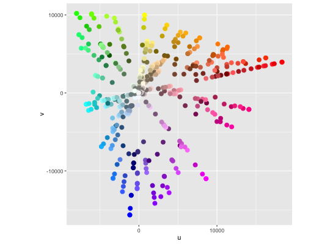
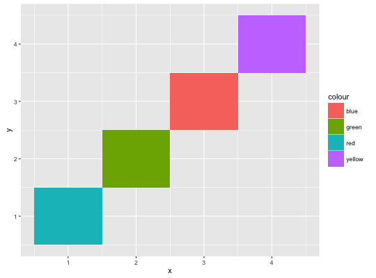
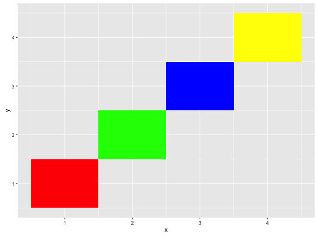
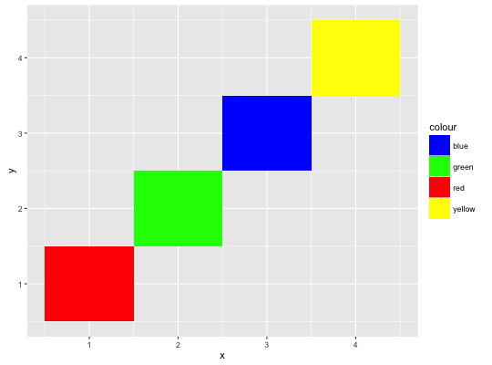
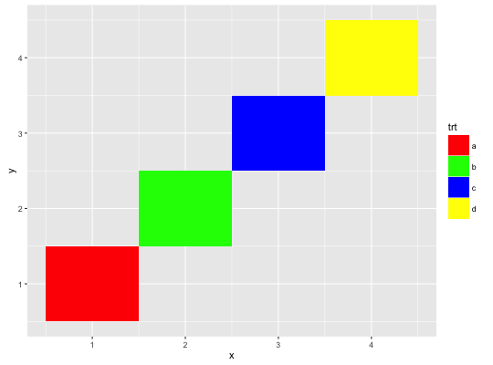
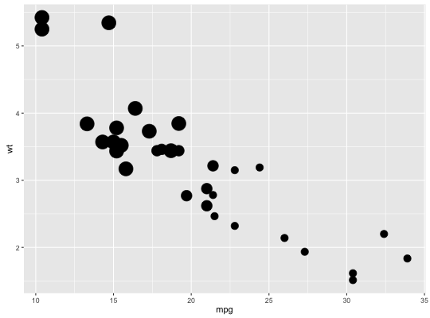

Use values without scaling.
Usage
scale_colour_identity(..., guide = "none")scale_fill_identity(..., guide = "none")scale_shape_identity(..., guide = "none")scale_linetype_identity(..., guide = "none")scale_alpha_identity(..., guide = "none")scale_size_identity(..., guide = "none")
Arguments
- ...
- Other arguments passed on to
discrete_scaleorcontinuous_scale - guide
- Guide to use for this scale - defaults to
"none".
Description
Use values without scaling.
Examples
ggplot(luv_colours, aes(u, v)) + geom_point(aes(colour = col), size = 3) + scale_color_identity() + coord_equal()
df <- data.frame( x = 1:4, y = 1:4, colour = c("red", "green", "blue", "yellow") ) ggplot(df, aes(x, y)) + geom_tile(aes(fill = colour))
ggplot(df, aes(x, y)) + geom_tile(aes(fill = colour)) + scale_fill_identity()
# To get a legend guide, specify guide = "legend" ggplot(df, aes(x, y)) + geom_tile(aes(fill = colour)) + scale_fill_identity(guide = "legend")
# But you'll typically also need to supply breaks and labels: ggplot(df, aes(x, y)) + geom_tile(aes(fill = colour)) + scale_fill_identity("trt", labels = letters[1:4], breaks = df$colour, guide = "legend")
# cyl scaled to appropriate size ggplot(mtcars, aes(mpg, wt)) + geom_point(aes(size = cyl))
# cyl used as point size ggplot(mtcars, aes(mpg, wt)) + geom_point(aes(size = cyl)) + scale_size_identity()